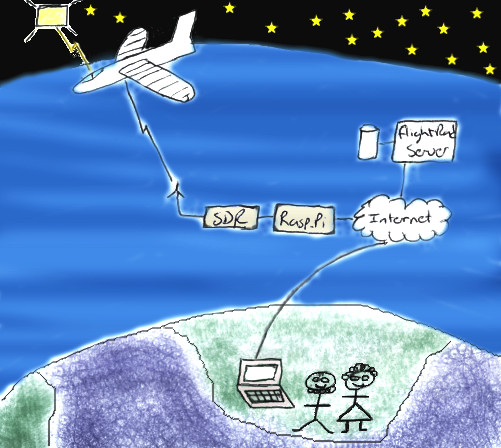

About Me
This page was inspired by a Youtube video I saw (NetworkChuck), which made me realize that even though I’m not an “expert” in anything, I do maybe have something that will help one other person. I have said it many times during performance evaluations that helping people is what charges my batteries.
When I started my journey as an engineer the internet was still very exclusive for academia, but it completely fascinated me. The idea of interacting and sharing with people I might not even know, but have a common interest with was what really pulled me into it.
As an Industrial Engineer I then started down a path that took me through junior developer, system engineering, product management, project management and currently back in product management. And the industries that I’ve been involved with also varied, starting off with developing call centers, working with radars that track golf balls, trying to destroy incoming projectiles, and managing roadmaps for landscaping tools.
Now this page is most likely not going to teach you much about any of what I’ve mentioned. This page is for the stuff that I do once my day at the office is done. The stuff I’ve not ever made money with, but really fascinated me, and well yea maybe one day when I’m old could be a side hustle (I don’t believe I will ever get old, I will just have a very high age).
So what is it that keeps me busy? I don’t think there is any specific order in this list, but here we go:
- I like creating 3D models and currently my application of choice is Blender. I have a few of my models showcased in blenderartist.org.
- Radios and antennas are very fascinating and now with Software Defined Radios (SDR) a whole new world has been opened up.
- I’ve always liked programming and started off on our Commodore 64 with basic. At university we had to do some Assembler (on Intel 8088 processor) and a Pascal like programming language called Modula 2. Most of my programming currently happens with Python. I'm hoping to link some repositories here later.
- Electronics, and especially if I can interact with it through software, so yes my home is scattered with Raspberry Pi’s that are doing some sort of automation for me, be it uploading Aircraft ADSB information or hosting my Telegram Bot, and that is another story that we will most likely come to.
Ok for now let's stop there and get working on the notes I would like to share.
3D Modeling
bla bl bla blender
Software Defined Radio (SDR)
The road to where I am using and playing with software defined radios started just after school and I wanted to build a radio that I saw in an old electronics book. Luckily I never built the radio, since it was actually to be used on amature radio bands, and that would have got me in some trouble. Four years later I understood a bit more about radios and actuall got my amature radio liscense. Although I was never that active on the chat scene I did like playing with all sorts of digital communication.
Stepping forward, lets just say a few years, I mostly use the SDR decoding ADSB and building antennas. One of the interesting things at the start I did not know was that Flightradar24, actually makes use of data feeds from private people in order to display the aircraft positions. If you are interested in getting a Flightradar24 Business account by streaming data to them, head over to Flighradar24 coverage and look at the options of building your own decoder or ordering one from them.
In addition to ADSB, there are many other things that can be heard or looked at on the electromagnetic spectrum. A good place to start is getting a RTL-SDR dongle and downloading the SDRangel software (be warned it is not the easiest tool but a very powerful one).
Coding
At the moment I mostly use Python as my go to programming language. It is not the fastest or the most compact, but it has a large selection of modules that are created by all sorts of awesome humans. It is also very easy to develop on my windows computer and then run on my Raspberry Pi(s).
Before using Python I also went through a phase of using Java together with the Netbeans IDE. This was also an easy solution and even when interfacing with outside hardware worked real well both on Windows and Linux. I would need to go and search for some of my Java projects, but back then I don't even know if Github was a thing yet (I believe I was actually running a local CVS (Concurrent Versions System) to store my source code).
Here are some of the projects I have been working on:
- Minetest Mod GPS - fun mod that helps me in Minetest to get around faster.
- Telegram Bot - is a convenient way of getting and returning some very specific information i like to look at.
- Telegram Bot Admin GUI - this application gives a GUI to administer some of the above mentioned Telegram Bot.
- IRC bot - called this one my wingman, ran on a Raspberry Pi and “helped” me during chats. Not all IRC admins were crazy about it once they found out.
- RasPiMon - client and server application in order to monitor multiple Raspberry Pi units. For example CPU usage or CPU temperature. Each Raspberry runs a client that reports data to the collector that displays information.
Electronics
This section will contain electronic stuff.
Tracking aircraft
I have been very fortunate that my career choices had given me the opportunity to travel (and yes also very fortunate that I have a super supportive family), and over the last few years it has become a tradition that I send my flight details to my parents before each trip. My parents use this information to follow my flights on flightradar24.com.
For long I just assumed the aircraft data was something flightradar24 was receiving from air traffic control “centres”. However in 2016 my interest in radios and radio communication introduced me to low cost software defined radios (SDRs) and what came with this new found knowledge that even I can contribute to supplying this magical aircraft position information.
All aircrafts are equipped with a transmitter (radio) that sends out information about the aircraft ( ok, almost all aircrafts, there are some exceptions, but we won't get into that for now). This technology is called Automatic dependent surveillance—broadcast, but most people just talk about ADS-B. This information is not encrypted and therefore anyone can receive and decode it, and yes, then feed it to flightradar24, where they put all of the base-stations' information together (they also do some other fancy stuff, which we might be speaking about in the future).
So, how does it work?
The main components I'll address are:
1. the aircraft with the transmitter
2. the receive antenna
3. the receiver radio
4. the decoder and broadcast computer
5. flightradar24